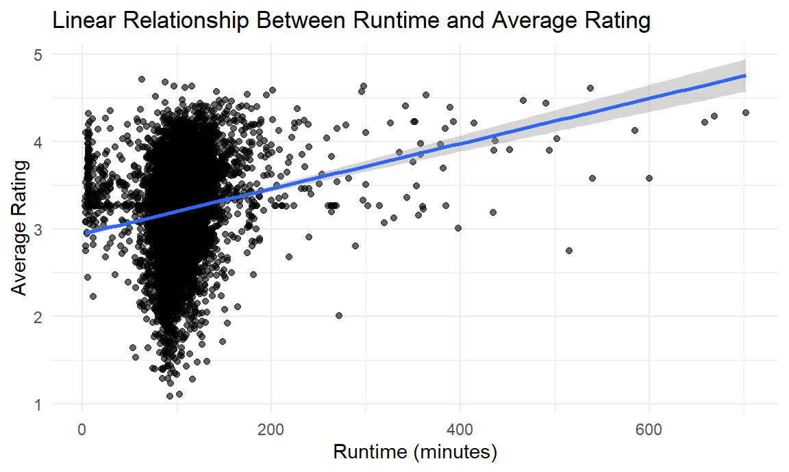
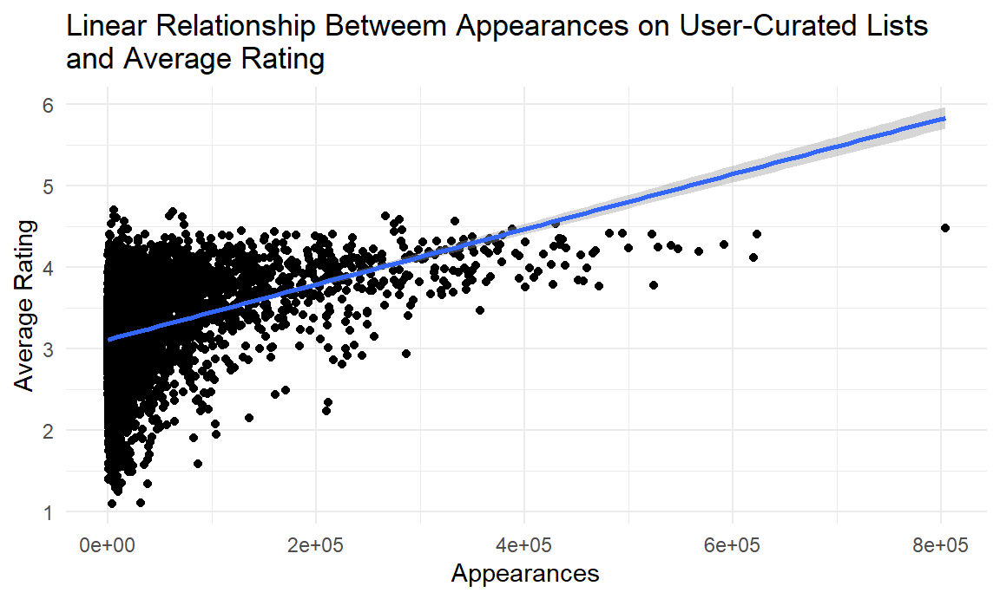
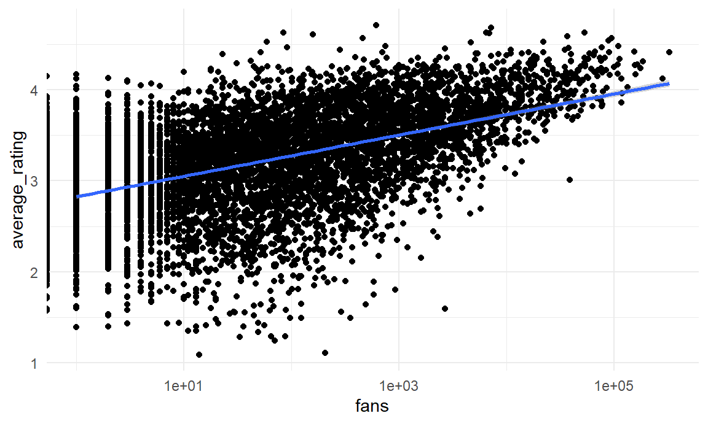
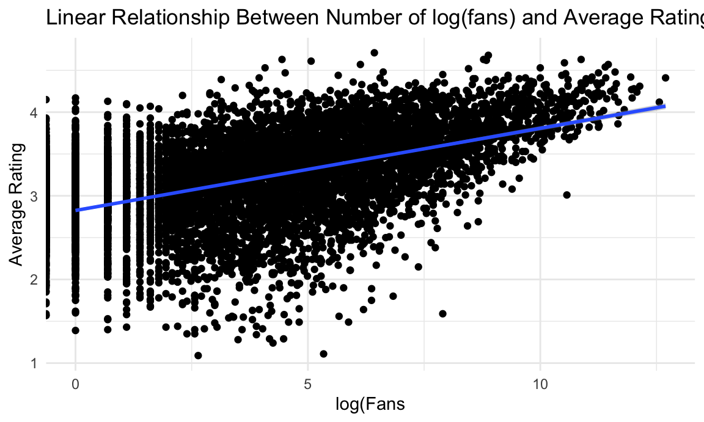
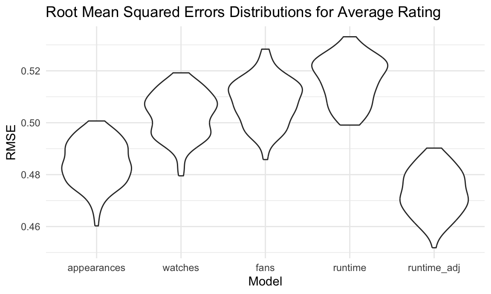

Regression Analysis
library(tidyverse)
library(mgcv)
library(modelr)
library(glmnet)
library(plotly)
knitr::opts_chunk$set(
fig.width = 6,
fig.asp = .6,
out.width = "90%"
)
theme_set(theme_minimal() + theme(legend.position = "bottom"))
options(
ggplot2.continuous.colour = "viridis",
ggplot2.continuous.fill = "viridis"
)
scale_colour_discrete = scale_colour_viridis_d
scale_fill_discrete = scale_fill_viridis_d
set.seed(1)Import data and organize genre
movie_df = read.csv("data/letterbox_movie_classification_dataset.csv") |>
janitor::clean_names() |>
filter(original_language == "English") |>
select(film_title, director, average_rating, genres, runtime, original_language, description, studios, watches, list_appearances, likes, fans, lowest, medium, highest, total_ratings)genre_df = movie_df |>
mutate(genres = str_remove_all(genres, "\\[|\\]|'")) |>
separate_rows(genres, sep = ",\\s*")genre_wide = genre_df |>
mutate(
studios = as.character(studios),
description = as.character(description),
genres = as.character(genres)
) |>
mutate(value = 1) |>
group_by(
film_title, director, average_rating, runtime, original_language,
description, studios, watches, list_appearances, likes, fans,
lowest, medium, highest, total_ratings, genres
) |>
summarise(value = max(value), .groups = "drop") |>
pivot_wider(
id_cols = c(
film_title, director, average_rating, runtime, original_language,
description, studios, watches, list_appearances, likes, fans,
lowest, medium, highest, total_ratings
),
names_from = genres,
values_from = value,
values_fill = 0
) |>
janitor::clean_names()Linear Models
Runtime vs. Average Rating
# Scatterplot
movie_df |>
ggplot(aes(runtime, average_rating)) +
geom_point(alpha = 0.6) +
geom_smooth(method = "lm", se = TRUE) +
labs(
title = "Relationship Between Runtime and Average Rating",
x = "Runtime (minutes)",
y = "Average Rating"
)## `geom_smooth()` using formula = 'y ~ x'
runtime_model = lm(average_rating ~ runtime, data = movie_df)
#Hypothesis Test
runtime_model |>
broom::tidy() |>
select(term, estimate, p.value)## # A tibble: 2 × 3
## term estimate p.value
## <chr> <dbl> <dbl>
## 1 (Intercept) 2.95 0
## 2 runtime 0.00258 1.04e-59WRITE INTREPRATION ## Runtime vs. Average Rating, adjusted for covariates
runtime_adj_model = lm(
average_rating ~ runtime + watches + list_appearances + fans,
data = movie_df
)
runtime_adj_model |>
broom::tidy() |>
select(term, estimate, p.value)## # A tibble: 5 × 3
## term estimate p.value
## <chr> <dbl> <dbl>
## 1 (Intercept) 2.94 0
## 2 runtime 0.00158 7.89e- 27
## 3 watches -0.000000431 4.77e- 60
## 4 list_appearances 0.00000676 3.78e-168
## 5 fans -0.00000229 3.05e- 3## Log-Transformed Runtime vs Average Rating
# Scatterplot with log(runtime)
movie_df |>
ggplot(aes(x = log(runtime), y = average_rating)) +
geom_point(alpha = 0.6) +
geom_smooth(method = "lm", se = TRUE) +
labs(
title = "Relationship Between log(Runtime) and Average Rating",
x = "log(Runtime)",
y = "Average Rating"
)## `geom_smooth()` using formula = 'y ~ x'
# Model with log-transformed runtime
runtime_log_model = lm(average_rating ~ log(runtime), data = movie_df)
runtime_log_model |>
broom::tidy() |>
select(term, estimate, p.value)## # A tibble: 2 × 3
## term estimate p.value
## <chr> <dbl> <dbl>
## 1 (Intercept) 2.85 0
## 2 log(runtime) 0.0790 0.00000000937Dictotomizing Runtime (above and below 90 mins)
movie_df = movie_df |>
mutate(
runtime_cat = if_else(runtime < 90, "Short (<90 min)", "Long (≥90 min)")
)
runtime_interaction_model = lm(
average_rating ~ runtime * runtime_cat,
data = movie_df
)
runtime_interaction_model |>
broom::tidy() |>
select(term, estimate, p.value)## # A tibble: 4 × 3
## term estimate p.value
## <chr> <dbl> <dbl>
## 1 (Intercept) 2.83 0
## 2 runtime 0.00363 3.88e-83
## 3 runtime_catShort (<90 min) 0.729 2.33e-58
## 4 runtime:runtime_catShort (<90 min) -0.00944 5.61e-67movie_df |>
ggplot(aes(x = runtime, y = average_rating, color = runtime_cat)) +
geom_point(alpha = 0.4) +
geom_smooth(method = "lm", se = FALSE) +
labs(
title = "Interaction Between Runtime and Runtime Category",
x = "Runtime (minutes)",
y = "Average Rating",
color = "Runtime Category"
)## `geom_smooth()` using formula = 'y ~ x'
WRITE INTERPRETATIONAppearances in User-Curated Lists vs. Average Rating
movie_df |>
ggplot(aes(list_appearances, average_rating)) +
geom_point() +
geom_smooth(method = "lm", se = TRUE)## `geom_smooth()` using formula = 'y ~ x'
appearances_model = lm(average_rating ~ list_appearances, data = movie_df)
appearances_model |>
broom::tidy() |>
select(term, estimate, p.value)## # A tibble: 2 × 3
## term estimate p.value
## <chr> <dbl> <dbl>
## 1 (Intercept) 3.11 0
## 2 list_appearances 0.00000339 3.44e-288Total Watches vs. Average Rating
movie_df |>
ggplot(aes(watches, average_rating)) +
geom_point() +
geom_smooth(method = "lm", se = TRUE)## `geom_smooth()` using formula = 'y ~ x'
watches_model = lm(average_rating ~ watches, data = movie_df)
watches_model |>
broom::tidy() |>
select(term, estimate, p.value)## # A tibble: 2 × 3
## term estimate p.value
## <chr> <dbl> <dbl>
## 1 (Intercept) 3.15 0
## 2 watches 0.000000304 7.41e-154Fans vs. Average Rating
movie_df |>
ggplot(aes(fans, average_rating)) +
geom_point() +
geom_smooth(method = "lm", se = TRUE) +
scale_x_log10()## Warning in scale_x_log10(): log-10 transformation introduced infinite values.
## log-10 transformation introduced infinite values.## `geom_smooth()` using formula = 'y ~ x'## Warning: Removed 1295 rows containing non-finite outside the scale range
## (`stat_smooth()`).
fans_model = lm(average_rating ~ fans, data = movie_df)
fans_model |>
broom::tidy() |>
select(term, estimate, p.value)## # A tibble: 2 × 3
## term estimate p.value
## <chr> <dbl> <dbl>
## 1 (Intercept) 3.19 0
## 2 fans 0.0000138 2.88e-126